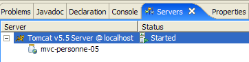

10. تطبيق الويب MVC [person] – الإصدار 5
10.1. مقدمة
في هذا الإصدار، نقوم بإجراء تغييرين:
يتعلق التغيير الأول بكيفية إشارة العميل إلى الخادم بالإجراء الذي يرغب في تنفيذه. حتى الآن، كان يتم تحديد ذلك باستخدام معلمة تسمى [action] في طلب GET أو POST الخاص بالعميل. هنا، سيتم تحديد الإجراء من خلال العنصر الأخير في عنوان URL الذي يطلبه العميل، كما هو موضح في التسلسل التالي:

في [1]، عنوان URL الذي تم إرسال النموذج إليه هو [/person5/do/validateForm]. العنصر الأخير [validateForm] من عنوان URL هو الذي سمح لوحدة التحكم بالتعرف على الإجراء المطلوب تنفيذه. في [2]، تم إرسال طلب POST الذي تم تشغيله بواسطة رابط [Return to form] إلى عنوان URL [/person5/do/returnForm]. هنا مرة أخرى، يحدد العنصر الأخير [returnForm] من عنوان URL للوحدة التحكم الإجراء الذي يجب تنفيذه.
نحن نقدم هذا التغيير لأنه الطريقة المستخدمة من قبل أطر عمل تطوير الويب الأكثر استخدامًا، مثل Struts أو Spring MVC.
ستكون جميع عناوين URL في التطبيق بالشكل [/person5/do/action]. سيحدد ملف [web.xml] لتطبيق [/person5] أنه يقبل عناوين URL بالشكل [/do/*]:
<servlet-mapping>
<servlet-name>personne</servlet-name>
<url-pattern>/do/*</url-pattern>
</servlet-mapping>
ستقوم وحدة التحكم باسترداد اسم الإجراء المطلوب تنفيذه على النحو التالي:
تُرجع طريقة [getPathInfo] الخاصة بكائن [request] العنصر الأخير من عنوان URL للطلب.
التغيير الثاني يتعلق بكيفية تخزين مدخلات المستخدم بين دورات الطلب/الاستجابة. حالياً، يتم تخزين هذه المعلومات في جلسة عمل. قد يكون لهذا النهج عيوب إذا كان هناك العديد من المستخدمين وكمية كبيرة من البيانات لتخزينها لكل واحد منهم. في الواقع، لكل مستخدم جلسة عمل شخصية خاصة به. علاوة على ذلك، تظل الجلسة نشطة لبعض الوقت بعد تسجيل خروج المستخدم، ما لم يتم توفير خيار تسجيل الخروج. وبالتالي، فإن 1,000 جلسة عمل بحجم 100 بايت لكل منها ستشغل 1 ميغابايت من الذاكرة. ويظل هذا متطلبًا معتدلاً، وقليلة هي التطبيقات التي لديها 1,000 جلسة عمل نشطة في وقت واحد.
ومع ذلك، هناك بدائل للجلسات التي تستهلك ذاكرة أقل، ومن الجيد أن تكون على دراية بها. هنا، سنستخدم طريقة ملفات تعريف الارتباط. دعونا نوضح ذلك بمثال.
الخطوة 1: يقوم المستخدم بإرسال نموذج:
 |
ينتج عن دورة الطلب/الاستجابة هذه التبادلات التالية عبر بروتوكول HTTP بين العميل والخادم:
[1]: [طلب العميل]
هذا طلب POST قياسي. لا يوجد شيء غير عادي هنا، باستثناء أنه على الرغم من أننا لن نستخدم جلسة عمل، فإن خادم الويب ينشئ واحدة على أي حال. ويتضح ذلك من رمز الجلسة الذي يرسله المتصفح إلى الخادم في السطر 11، والذي كان قد تلقّاه سابقًا من الخادم.
[2]: [استجابة الخادم]
يمكننا أن نرى أنه في السطرين 3 و 4، تم إرسال رؤوس HTTP [Set-Cookie] إلى متصفح العميل، واحدة للاسم (السطر 3) وواحدة للعمر (السطر 4). قيم ملفات تعريف الارتباط هذه هي القيم المنشورة في السطر 14 من POST [1] أعلاه.
الخطوة 2: العودة إلى النموذج

ينتج عن دورة الطلب/الاستجابة هذه التبادلات HTTP التالية بين العميل والخادم:
[1]: [طلب العميل]
هنا نرى طلب POST الذي تم تشغيله بالنقر على رابط [العودة إلى النموذج]. في السطر 11، نرى أن المتصفح يرسل ملفات تعريف الارتباط التي تلقّاها [name, age, JSESSIONID] إلى الخادم باستخدام رأس HTTP [Cookie]. هكذا تعمل ملفات تعريف الارتباط. يرسل العميل إلى الخادم ملفات تعريف الارتباط التي أرسلها الخادم إليه. في هذا المثال، سيتلقى وحدة التحكم القيم [pauline, 18]، والتي يجب أن يضعها في حقول [txtName, txtAge] في عرض [form] المعروض في [2].
[2]: [استجابة الخادم]
لا يوجد شيء محدد يستحق الذكر هنا سوى حقيقة أن الخادم لم يرسل أي ملفات تعريف ارتباط في هذا الرد. لن يمنع هذا المتصفح من إعادة إرسال جميع ملفات تعريف الارتباط التي تلقاها من الخادم في التبادل التالي، حتى لو لم يكن لذلك أي فائدة. لذلك، نقوم بتقليل الحمل على الذاكرة المتاحة للخادم على حساب زيادة تدفق الأحرف في التبادلات بين العميل والخادم.
10.2. مشروع Eclipse
لإنشاء مشروع Eclipse [mvc-personne-05] لتطبيق الويب [/personne5]، قم بنسخ مشروع [mvc-personne-04] باتباع الإجراء الموضح في القسم 6.2.
 |  |
10.3. تكوين تطبيق الويب [personne5]
فيما يلي ملف web.xml الخاص بتطبيق /personne5:
<?xml version="1.0" encoding="UTF-8"?>
<web-app id="WebApp_ID" version="2.4"
xmlns="http://java.sun.com/xml/ns/j2ee"
xmlns:xsi="http://www.w3.org/2001/XMLSchema-instance"
xsi:schemaLocation="http://java.sun.com/xml/ns/j2ee http://java.sun.com/xml/ns/j2ee/web-app_2_4.xsd">
<display-name>mvc-personne-05</display-name>
<!-- ServletPersonne -->
<servlet>
<servlet-name>personne</servlet-name>
<servlet-class>
istia.st.servlets.personne.ServletPersonne
</servlet-class>
...
</servlet>
<!-- Mapping ServletPersonne-->
<servlet-mapping>
<servlet-name>personne</servlet-name>
<url-pattern>/do/*</url-pattern>
</servlet-mapping>
<!-- welcome files -->
<welcome-file-list>
<welcome-file>index.jsp</welcome-file>
</welcome-file-list>
</web-app>
هذا الملف مطابق للملف الموجود في الإصدار السابق باستثناء بعض التفاصيل:
- السطر 6: تغير اسم العرض لتطبيق الويب إلى [mvc-personne-05]
- السطر 18: عناوين URL التي يتعامل معها التطبيق هي على شكل [/do/*]. في السابق، كان يتم التعامل مع عنوان URL [/main] فقط. الآن، هناك عدد من عناوين URL يساوي عدد الإجراءات المطلوب التعامل معها.
تتغير الصفحة الرئيسية [index.jsp]:
<%@ page language="java" contentType="text/html; charset=ISO-8859-1"
pageEncoding="ISO-8859-1"%>
<%@ taglib uri="/WEB-INF/c.tld" prefix="c" %>
<c:redirect url="/do/formulaire"/>
- السطر 5: تقوم صفحة [index.jsp] بإعادة توجيه العميل إلى عنوان URL [/person5/do/form]، وهو ما يعادل مطالبة وحدة التحكم بتنفيذ الإجراء [form].
10.4. كود العرض
لا تتغير طرق العرض [form، response، errors] إلا قليلاً. التغيير الوحيد هو أن الإجراء المطلوب تنفيذه لم يعد محدداً بنفس الطريقة السابقة، عندما كان يُعرَّف في حقل مخفي باسم [action] في النماذج المرسلة. الآن يتم تعريفه في عنوان URL الهدف للنماذج المرسلة، أي في سمة [action] لعلامة <form>:
[form.jsp]:
...
<html>
<head>
<title>Personne - formulaire</title>
<script language="javascript">
...
</script>
</head>
<body>
<center>
<h2>Personne - formulaire</h2>
<hr>
<form name="frmPersonne" action="validationFormulaire" method="post">
...
</form>
</center>
</body>
</html>
- السطر [13]: يعود ظهور المعلمة [action] في النموذج بعد غيابها لفترة في الإصدارات السابقة. لفهم قيمة هذه السمة هنا، تذكر أن جميع عناوين URL التي يعالجها التطبيق تكون على شكل [/do/action]. في السطر [13]، تحتوي السمة [action] على عنوان URL نسبي كقيمة لها (لا يبدأ بـ /). لذلك، سيكملها المتصفح بعنوان URL للصفحة المعروضة حاليًا، والذي يكون بالضرورة عنوان URL بالشكل [/do/action]. سيتم استبدال العنصر الأخير بعنوان URL النسبي للسمة [action] لعلامة <form> للحصول على عنوان URL [/do/validationFormulaire] كهدف POST.
- اختفى الحقل المخفي [action]
[response.jsp]:
...
<html>
...
<body>
...
<form name="frmPersonne" action="retourFormulaire" method="post">
</form>
<a href="javascript:document.frmPersonne.submit();">
${lienRetourFormulaire}
</a>
</body>
</html>
- السطر [7]: سيكون هدف POST هو [/do/returnForm]
- تمت إزالة الحقل المخفي [action] من النموذج في السطرين 7 و8.
[errors.jsp]:
...
<html>
...
<body>
...
<form name="frmPersonne" action="retourFormulaire" method="post">
</form>
<a href="javascript:document.frmPersonne.submit();">
${lienRetourFormulaire}
</a>
</body>
</html>
- السطر [6]: سيكون هدف POST هو [/do/returnForm]
- تمت إزالة الحقل المخفي [action] من النموذج في السطرين 6 و7.
ندعو القراء إلى اختبار هذه العروض الجديدة باستخدام النهج الذي شوهد في الإصدارات السابقة.
10.5. وحدة التحكم [ServletPersonne]
ستتولى وحدة التحكم [ServletPersonne] الخاصة بتطبيق الويب [/personne5] معالجة الإجراءات التالية:
رقم | الطلب | المصدر | المعالجة |
1 | [GET /person5/do/form] | عنوان URL الذي أدخله المستخدم | - إرسال عرض [form] فارغ |
2 | [POST /person5/do/formValidation] مع المعلمات [txtName، txtAge] تم النشر | انقر على [إرسال] في [form] | - تحقق من قيم المعلمات [txtName، txtAge] - إذا كانت غير صحيحة، أرسل عرض [errors(errors)] - إذا كانت صحيحة، أرسل عرض [response(name,age)] |
3 | [POST /person5/do/returnForm] بدون معلمات مرسلة | انقر على [العودة إلى الاستمارة] من [الاستجابة] و[الأخطاء]. | - إرسال عرض [النموذج] مملوءًا مسبقًا بأحدث القيم المدخلة |
هيكل وحدة التحكم [ServletPersonne] مطابق للنسخة السابقة. سنستعرض التغييرات التي تم إجراؤها على الطرق [doValidationFormulaire، doRetourFormulaire، doGet]؛ بينما تظل الطرق [init، doInit، doPost] دون تغيير.
10.5.1. طريقة [doGet]
لا تسترد طريقة [doGet] الإجراء المراد تنفيذه بنفس الطريقة المتبعة في الإصدارات السابقة:
- السطر 12: استرداد الإجراء المراد تنفيذه. ويكون في صيغة [/action].
- الأسطر 18–22: معالجة الإجراء [/form] المطلوب بواسطة طلب GET
- الأسطر 23–27: معالجة الإجراء [/validateForm] المطلوب بواسطة طلب POST
- الأسطر 28–32: معالجة الإجراء [/returnForm] المطلوب بواسطة طلب POST
10.5.2. طريقة [doValidationFormulaire]
تقوم هذه الطريقة بمعالجة الطلب رقم 2 [POST /person5/do/validationFormulaire] مع [txtName, txtAge] في العناصر المرسلة. وفيما يلي شفرة هذه الطريقة:
ما الجديد:
- تُرجع الطريقة [doValidationFormulaire] إحدى قيمتي [response] أو [errors]. وبغض النظر عن الاستجابة، يقوم وحدة التحكم بتعيين ملفين من ملفات تعريف الارتباط بداخلها، في السطرين 8 و9. يتم تمثيل ملف تعريف الارتباط بواسطة كائن [Cookie] الذي يقبل منشئه معلمتين: مفتاح ملف تعريف الارتباط والقيمة المرتبطة به.
- السطر 8: يتم وضع القيمة التي تم إدخالها للاسم في ملف تعريف ارتباط بمفتاح "name"
- السطر 9: يتم وضع القيمة التي تم إدخالها للعمر في ملف تعريف ارتباط بمفتاح "age"
- تتم إضافة ملف تعريف ارتباط إلى استجابة HTTP المرسلة إلى العميل باستخدام طريقة [response.addCookie]. يتم إعداد هذه الاستجابة هنا فقط. ولن يتم إرسالها فعليًا إلا عند تنفيذ صفحة JSP الخاصة بالطريقة المرسلة إلى العميل.
10.5.3. طريقة [doRetourFormulaire]
تقوم هذه الطريقة بمعالجة الطلب رقم 2 [POST /person5/do/retourFormulaire] دون أي بيانات مرسلة. وفيما يلي شفرة هذه الطريقة:
ما الجديد:
يجب أن تعرض طريقة [doRetourFormulaire] نموذجًا مملوءًا مسبقًا بأحدث الإدخالات. في الإصدار السابق، كانت هذه البيانات تُخزَّن في الجلسة (session). أما في هذا الإصدار، فلم نعد نستخدم الجلسة، بل نستخدم ملفات تعريف الارتباط (cookies) لتخزين البيانات بين عمليات التبادل بين العميل والخادم. عندما طلب العميل التحقق من صحة النموذج، تلقى عرض [response] أو [errors] كاستجابة، حسب الاقتضاء، إلى جانب ملفين من ملفات تعريف الارتباط يحملان اسمي "name" و"age". عند النقر على رابط [Back to form] في هذين العرضين — مما يؤدي إلى إرسال طلب POST إلى عنوان URL [/do/retourFormulaire] — يرسل المتصفح ملفَي تعريف الارتباط اللذين تلقاهما إلى الخادم.
- الأسطر 4–18: نسترد قيم ملفات تعريف الارتباط المسماة "name" و"age". ومن الغريب أنه لا توجد طريقة لاسترداد قيمة ملف تعريف الارتباط بناءً على مفتاحه. لذلك، يجب علينا تكرار كل ملف من ملفات تعريف الارتباط المستلمة.
- بمجرد الانتهاء من ذلك، يتم وضع القيمتين اللتين تم الحصول عليهما في قالب عرض [form] (السطور 20–21) حتى يتمكن من عرضهما.
10.6. الاختبار
ابدأ أو أعد تشغيل Tomcat بعد دمج مشروع Eclipse [person-mvc-05] فيه، ثم اطلب عنوان URL [http://localhost:8080/personne5].